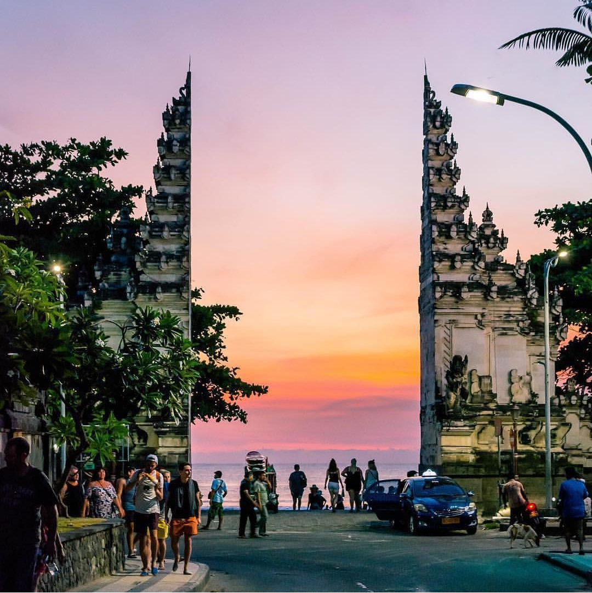

IMAGES
IMAGES OF YOUR IMAGINATION PKACES

BALI

KUTA

Visit The places Of Imagination
Bali is the most popular Indonesian island known for its
natural settings, scenic beaches, traditional culture, rich
history, creativity, art and crafts, and the genuine warmth
of the local people.
Places In Bali
Kuta is the best known tourist resort area on the island of Bali, Indonesia. With a long
broad Indian Ocean beach-front, Kuta was discovered by tourists as a surfing paradise. It
has long been a popular stop on the classic Banana Pancake Trail backpacking route in
South-East Asia.
Places In Kuta
Nusa Penida measures over 200 sq km – significantly larger
than the popular Nusa Lembongan and its accessible sister
island, Nusa Ceningan. Lesser-travelled compared to the other
2, Nusa Penida has a very limited number of hotels and tourist
features.
Places In Penida Island
IMAGES OF YOUR IMAGINATION PKACES
We're dedicated to providing you the best of resort, with a focus on dependability and resort.
We're working to turn our passion for resort into a booming online website. We hope you enjoy our resort as much as we enjoy offering them to you.